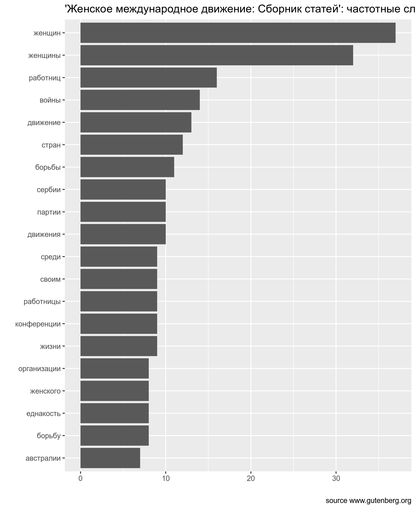
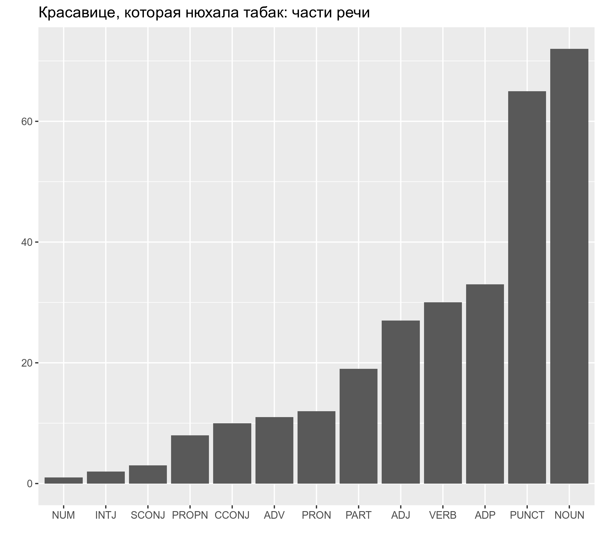

5 HW
Вот отсюда можно скачать файл с текстом стихотворения Н. Заболоцкого “Меркнут знаки задиака”. Посчитайте долю женских (ударение падает на предпоследний слог рифмующихся слов) и мужских (ударение падает на последний слог рифмующихся слов) рифм в стихотворении.
📋 список подсказок ➡
👁 Датасеты скачивается с ошибкой, почему? ➡
Дело в том, что исходный файл в формате.txt, а не .csv. Его нужно скачивать, например, командой read_lines() 👁 Ошибка: ...applied to an object of class "character" ➡
Скачав файл Вы получили вектор со строками, где каждая элимент вектора – строка стихотворения. Создайте
tibble(), тогда можно будет применять стандартные инструменты tidyverse.
👁 Хорошо, tibble() создан, что дальше? ➡
Дальше нужно создать переменную, из которой будет понятно, мужская в каждой строке рифма, или женская.
👁 А как определить, какая рифма? Нужно с словарем сравнивать? ➡
Формально говоря, определять рифму можно по косвенным признакам. Все стихотворение написано четырехстопным хореем, значит в нем либо 7, либо 8 слогов. Значит, посчитав количество слогов, мы поймем, какая перед нами рифма.👁 А как посчитать гласные? ➡
Нужно написать регулярное выражение… вроде бы это тема нашего занятия…👁 Гласные посчитаны. А что дальше? ➡
Ну теперь нужно посчитать, сколько каких длин (в количестве слогов) бывает в стихотворении. Это можно сделать при помощи функцииcount().
👁 А почему у меня есть строки длины 0 слогов ➡
Ну, видимо, в стихотворении были пустые строки. Они использовались для разделения строф.👁 А почему у меня есть строки длины 6 слогов ➡
Ну, видимо, Вы написали регулярное выражение, которое не учитывает, что гласные буквы могут быть еще и в начале строки, а значит написаны с большой буквы.
В ходе анализа данных чаще всего бороться со строками и регулярными выражениями приходится в процессе обработки неаккуратнособранных анкет. Предлагаю обработать переменные sex и age такой вот неудачно собранной анкеты и построить следующий график:

📋 список подсказок ➡
👁 А что это за geom_...()? ➡
Это geom_dotplot() с аргументом method = "histodot" и с удаленной осью y при помощи команды scale_y_continuous(NULL, breaks = NULL)
👁 Почему на графике рисутеся каждое значение возраста? ➡
Если Вы все правильно преобразовали, должно помочь преобразование строковой переменной age в числовую при помощи функции as.integer().
Скачайте из проекта gutenberg.org текст “Женское международное движение: Сборник статей”. Используя список русских стопслов (папка data, файл stopwords_ru.csv), уберите из текста служебные слова, посчитайте и визуализируйте 20 самых частостных слов текста.

- Скачайте из проекта <gutenberg.org> текст “Красавице, которая нюхала табак”,
-
используйте команду
str_c(text_5316$text, collapse = " "), чтобы объединить все строки, на которые поделено произведение в одну строку, -
запустите на получившемся векторе анализатор
russian-syntagrus-ud-2.4-190531.udpipe, -
в получившемся датафрейме замените все пометы
DETв столбце с частями речи (переменнаяupos) наPART, а у двух слов с пометойAUXпоменяйте помету наPART(слово б) и наVERB(слово быть), -
посчитайте каждой из частей речи (переменная
upos), - и постройте график:
